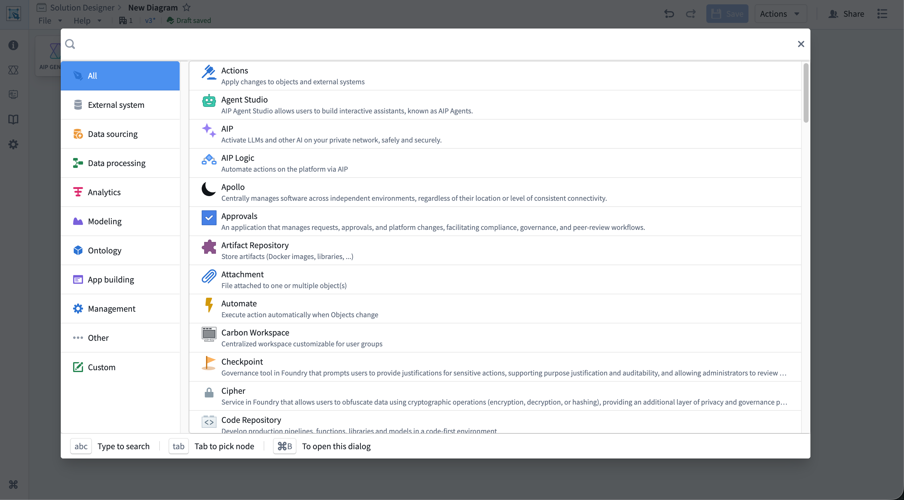
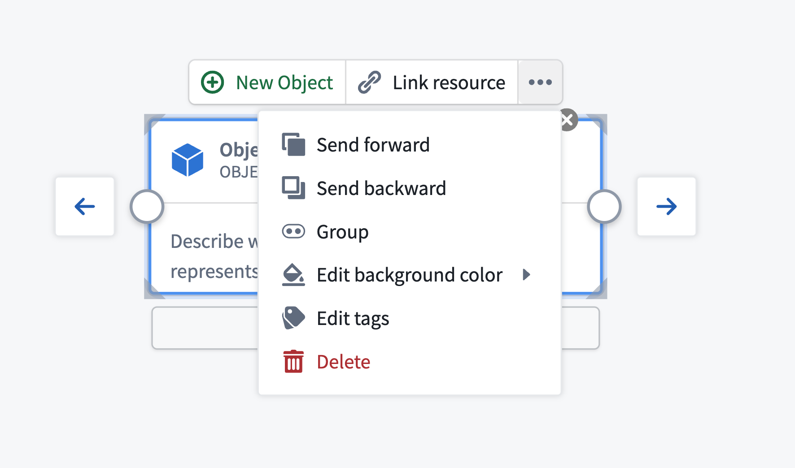
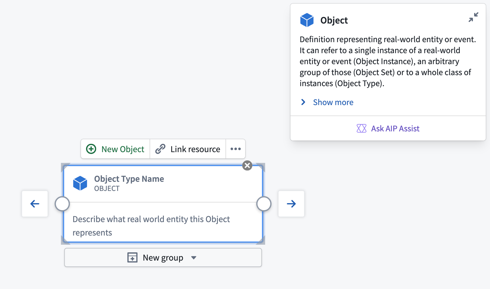
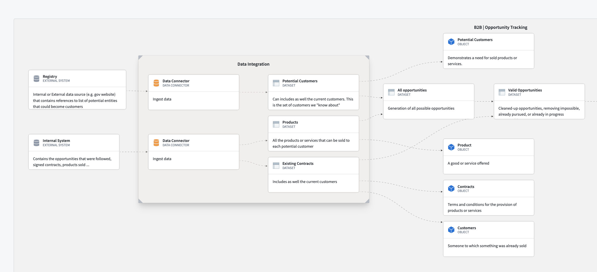
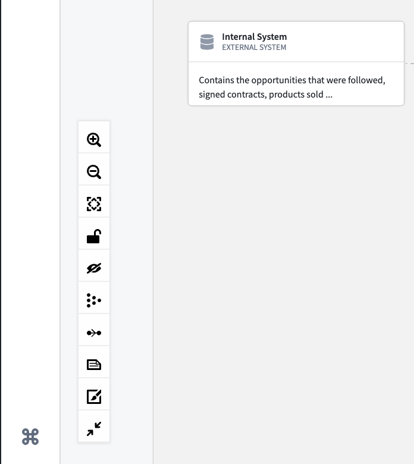
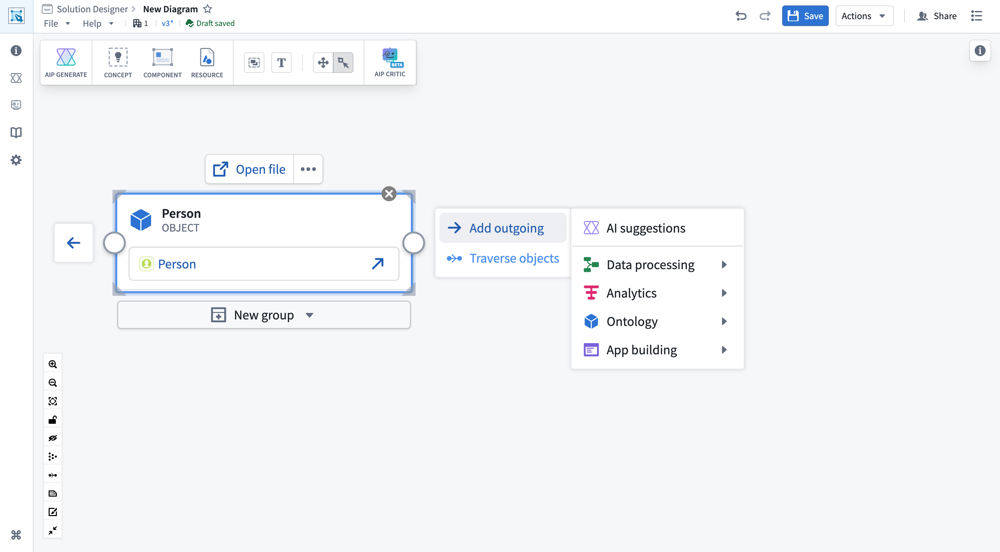

Diagrams
This page explains how to interact with diagrams in Solution Designer, including adding nodes, creating connections, organizing your diagram, and customizing your view.
Add nodes to your diagram
Solution Designer provides several ways to add nodes representing platform components, resources, or abstract concepts to your diagram.
Add component nodes
Component nodes represent specific Palantir platform applications and tools, such as Pipeline Builder, Workshop, or Contour.
To add a component node:
- Select the Component button in the diagram toolbar or press
Cmd/Ctrl + B.
- The component picker dialog opens, showing all available platform components organized by category.
- Browse categories on the left or use the search bar at the top to find a specific component.
- Select a component from the list to add it to your canvas.

After adding a component node, configure additional details that render on your diagram and provide users with additional information about the node's purpose in your depicted workflow.
Add resource nodes
Resource nodes represent specific Foundry resources linked to your diagram, such as datasets, object types, functions, or actions.
To add a resource node:
- Select the Resource button in the diagram toolbar.
- A dropdown menu appears with four options:
* New file node: Browse Foundry resources to add
* New object node: Select an object type from your ontology
* New interface node: Select an interface from your ontology
* New action node: Select an action type from your ontology
- Search for and select the resource from the modal that opens, and Solution Designer adds the node to your canvas with a link to the selected resource.
Resource nodes automatically display the resource name and provide a link to open the resource in its native application.
Add concept nodes
Concept nodes represent abstract, high-level workflow concepts (such as "Data Sourcing" or "Analytics") that you can later replace with specific implementations. These are primarily used with AIP Architect for planning workflows.
To add a concept node, select the Concept button in the diagram toolbar before choosing your concept type, such as Analytics or Data Processing.
You can convert abstract concept nodes to concrete implementation patterns using AIP Architect.
Add groups
Groups allow you to organize related nodes into logical containers.
To add an empty group, select the Group button in the diagram toolbar and drag nodes into the group to add them as members.
You can also create groups from existing nodes by selecting multiple nodes and using the Group action. Learn more about creating groups from existing nodes..
Add text nodes
Text nodes allow you to add comments, annotations, or documentation directly on your diagram.
To add a text node, select the Add Text node button in the diagram toolbar and choose the text node on the canvas to edit its content.
Configure nodes
After adding a node to your diagram, you can configure its properties and link it to Foundry resources.
Node toolbar
When you select a node, a small toolbar appears directly above it. This toolbar is the primary way to interact with and configure nodes. The toolbar contains several buttons arranged horizontally:
- Primary action button: For nodes linked to resources, this button opens the resource in its native application, such as Pipeline Builder or Workshop. For unlinked nodes, this button allows you to link a resource.
- Link resource: Associate a Foundry resource with this node by its RID. Select Link resource to open a resource picker dialog, then select a dataset, pipeline, application, or other Foundry resource. When linked, the node displays the resource name and provides direct navigation to that resource.
- Actions menu: Select ... to access additional node operations:
- Overlap order: Change how overlapping nodes are layered.
- Group: Create a new group beginning with the selected node.
- Edit background color: Customize the node's background color.
- Remove linked resource: Unlink a Foundry resource from the node.
- Edit tags: Add or remove tags to categorize nodes by marking, organization, or team.
- Delete: Remove the node from the diagram.

Customize node appearance
You can customize how nodes appear on your diagram:
- Background color: Right-click on a node and select Change Bg color or use the Actions menu in the node toolbar.
- Icon: Change the icon and its color for custom nodes.
- Custom title: Edit the node title by choosing it directly when the node is selected.
- Resize nodes: Hover over the corners or edges of a node and drag the resize handles to adjust its size.
Node documentation card
Each node displays a documentation card at the top-right showing information about the platform component it represents. The card shows:
- Component name and icon: Identifies the platform component.
- Brief description: A short summary of what the component does.
- Full description: An expandable section with additional details about the component's capabilities and use cases, which you can view by selecting Show more.
- Documentation link: Opens the official Foundry documentation for the component in a new tab.
- Ask Assist: Opens a dialog to ask AIP Assist questions about the component if AIP is enabled.
To minimize the documentation card, select the minimize button in the top-right corner of the card. A small info icon remains visible, which you can select to re-expand the card.

Create connections
Connections, or edges, between nodes represent data flow, dependencies, or relationships in your architecture.
Connect nodes
To create a connection:
- Hover over the node you want to connect from. Small circular handles appear on the left and right edges.
- Select the handle and drag from the right handle (output) of the source node.
- Drag your cursor to the left handle (input) of the target node.
- Release the mouse button to create the connection.
Edit or delete connections
To delete a connection:
- Select the connection line on the canvas, which will highlight after selection.
- Press
Backspace or Delete.
Alternatively, right-click on a connection and select Delete Edge from the context menu.
Connection labels
You can add labels to connections to describe the relationship or data flow.
To add or edit a connection label:
- Select the connection on the canvas.
- Select the label area that appears on the connection.
- Type your label text in the
Click to Edit text input box.
- Select anywhere on your canvas outside the label to register your changes before choosing Save.
You can toggle the visibility of all edge labels using the canvas toolbar.
Group nodes
Grouping related nodes helps organize complex diagrams and creates logical boundaries for different parts of your architecture.
Create a group from existing nodes
To group existing nodes:
- Select multiple nodes by holding
Cmd/Ctrl and selecting each node or by holding Shift and dragging a selection box around the nodes.
- With nodes selected, select the Group button in the diagram toolbar or right-click and select Group.
Solution Designer groups the selected nodes in a single container.
Manage group membership
Follow the actions below to manage group membership after creation.
- Add nodes: Choose and drag any node from the canvas onto the group. When the node crosses inside the group boundary, release to add it as a member.
- Remove nodes: Choose and drag a node out of the group boundary. The node is removed from the group but remains on the canvas.
- Move groups: Choose and drag the group container itself. All member nodes move with it, maintaining their relative positions.

Canvas controls
The canvas toolbar appears in the bottom-left corner of the canvas and provides tools for navigating and manipulating your diagram. The toolbar contains several icon buttons stacked vertically:
- Zoom in: Increase zoom level to see more detail.
- Zoom out: Decrease zoom level to see more of the diagram.
- Fit all nodes into view: Automatically center and zoom to show the entire diagram.
- Lock diagram: Enable read-only mode to prevent accidental edits. You can still pan and zoom when locked. Locking a diagram is useful during presentations.
- Hide/show background dots: Toggle the visibility of the background dot grid.
- Layout nodes automatically: Automatically arrange nodes in a grid-like structure with even spacing and minimal edge crossings. Useful for organizing messy diagrams.
- Toggle edge flow animation: Animate edge flow labels on your canvas.
- Hide/Show Edge labels: Hide or show labels on all connections.
- Hide/Show Edge Validity: Hide or show edge validity shading.
- Minimize/Maximize node display: Minimizes information displayed on a node. This is useful for saving space on a large or complex diagram.

Mini-map
The mini-map shows a bird's-eye view of your entire diagram and your current viewport position.
To enable the mini-map:
- Open the Settings panel (see Settings).
- Toggle Mini-map to enabled.
- The mini-map appears in the bottom-right corner of the canvas.
Select the mini-map to jump to different areas of your diagram.
Pan and zoom
To navigate the canvas:
- Pan: Select and drag on empty canvas space or enable Pan mode in settings to pan without accidentally selecting nodes.
- Zoom: Use the mouse wheel, touch pad pinch gesture, or the zoom buttons in the canvas toolbar.
- Fit to view: Select the Fit all nodes into view button to center and zoom to show all nodes.
Advanced node operations
Side menu
When you select a node on the canvas, a side menu panel opens on the right side of the screen, providing additional options for that node.
Node traversal
For all nodes, the side menu includes a Node traversal section that allows you to explore the diagram by navigating through connected nodes:
- View connected nodes: See a list of all nodes connected to the currently selected node.
- Jump to connected node: Select any connected node in the list to select and center it on the canvas.
- Understand data flow: Quickly trace how data moves through your architecture by following node connections.
Node traversal helps you navigate complex diagrams and understand relationships between components without manually searching.

Object traversal
For nodes linked to ontology object types, the side menu includes an Object traversal section that displays the ontology relationships available for that object type:
- View relationships: See all link types and related object types defined in the ontology.
- Create traversal: Select specific relationships to automatically generate related object type nodes on the canvas, which mimics the functionality of the Create traversal action in the node toolbar.
- Explore ontology structure: Understand how this object type connects to other parts of your data model.
Context menu
While the canvas and node toolbars are the primary ways to interact with your diagram, you can also use context menus as an alternative:
- Right-click on a node: Shows options like Change Bg color, Group with other selected nodes, and Delete.
- Right-click on canvas: Shows options like Add Comment, Add Empty group, and Layout nodes automatically.
The context menu provides quick access to common actions, but most operations are more conveniently accessed through the dedicated toolbars.